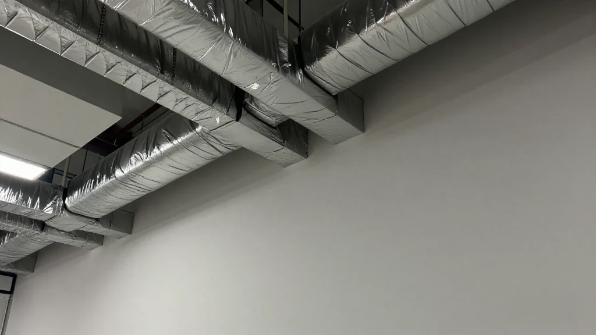
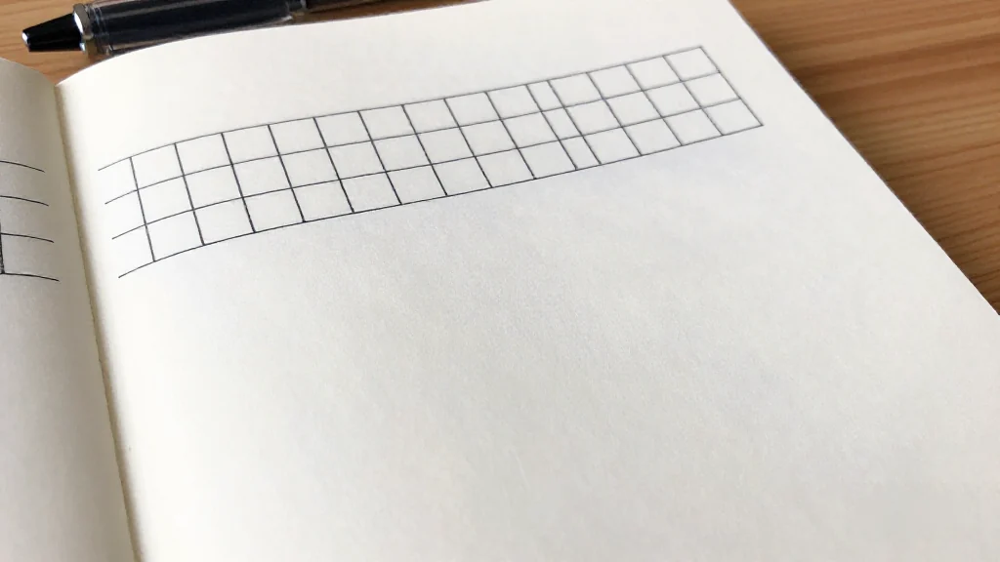

圖片由 AI輔助創作（Z-Image-Turbo）Image by AI (Z-Image-Turbo)
【鄭哥點評】欄目：鄭哥博客點評｜日期：2026-10-27
上個禮拜有人遞咗兩份 PDF 畀我，全部波蘭文。一份叫 Komisja Oceny（評審委員會報告），一份叫 Certyfikat Ukończenia Projektu（項目完成證書）。翻開第一頁，公司名我未聽過：Vistula Data Systems Sp. z o.o.。
我當時第一個反應唔係「呢間公司得唔得」。我問自己另一條問題：如果我手上只有公開文件，我究竟可以睇到幾多？
所以呢篇唔係判一間公司。呢篇係我點樣用公開文件去睇一間外國細供應商——Vistula Data Systems 只係我今次做練習嘅樣本。你手上如果想查一間越南、印度定墨西哥嘅細公司，方法一樣。
為咗避免涉及真實公司，本文嘅公司名、機構名同部分細節已作改寫，唔對應任何真實企業；技術判斷同方法論係真實嘅。
一、第一件事唔係睇內容，係睇「有冇得驗」
圖片由 AI輔助創作（Z-Image-Turbo）Image by AI (Z-Image-Turbo)
兩份文件，講嘅係兩個唔同嘅項目，兩件唔同嘅事。
第一份係評審委員會報告（Komisja Oceny），編號 A-R-04，2025 年 5 月 13 日修訂版。佢記錄嘅唔係驗收，係一次延期申請：項目代號 VDS-2，做嘅係「Urządzenie do łagodzenia ataków DDoS」，即 DDoS 緩解設備；承擔方就係上面嗰間 Vistula Data Systems Sp. z o.o.。項目 2022 年 12 月 19 日啟動，原本 24 個月，預算 490,632 茲羅提。走到 2025 年 4 月，公司提出申請：再畀 6 個月，延到 2025 年 12 月 19 日。三位外部評審分別打 27/30、24/30、21/30，全部同意延期。
第二份係項目完成證書（Certyfikat Ukończenia Projektu），由波蘭南部一個科技園於 2025 年 1 月 13 日簽發。佢證明嘅係另一件事：75562 號項目「基於 AI 的防火牆軟件開發」，2021 年 12 月 21 日啟動，2024 年 11 月 15 日完成，有官方批准編號。項目做完了，官方認了。
一份講延期，一份講完成。表面上好似講緊兩件相反嘅事——先忍一忍，我第二節會講點解呢兩份嘢放埋一齊完全合理。
但我要講嘅重點係第三樣，係文件右下角嗰個二維碼：佢連去一套驗證機制，可以反查份文件係唔係真。
波蘭科技園區嘅文件，好多都附帶驗證機制，可以反查真偽。你手上嗰份影印本，可以拿去簽發機構自己嘅站點對一次。
呢一點係我睇任何外國文件嘅第一關，而且係最重要嘅一關：唔係睇佢寫咗乜，係睇佢有冇得驗。
一份驗唔到嘅文件，同冇文件，分別唔大。一份可以喺簽發機構自己站點反查到嘅文件，至少證明一件事：簽發機構存在，而且願意為呢張紙負責。呢個分別，比文件寫得幾漂亮重要得多。
二、延期唔等於失敗：一份評審報告應該點讀
圖片由 AI輔助創作（Z-Image-Turbo）Image by AI (Z-Image-Turbo)
好多人見到「延期」兩個字，心裡面就自動打個折。我唔係咁讀。
報告寫嘅理由係具體嘅，唔係官樣文章：
在 eBPF XDP 環境中集成 AI 算法，所需嘅分析同開發工作量超出預期。AI 算法要適配內核層運行嘅 eBPF XDP 環境，帶來深度優化需求；算法既要低延遲又要有高準確率，仲要高效使用系統資源，現有架構需要重新設計。
呢段嘢有信息量。佢話我知：呢個團隊喺做一件真係有難度嘅事，而且佢哋撞到嘅牆係技術牆，唔係管理牆。
但更有信息量嘅係流程本身。延期唔係自己寫張紙就算數：要交報告、要三位外部評審逐個打分、要全部同意，個時鐘先可以移。
所以一份批准咗嘅延期報告，證明嘅唔係「呢間公司做唔到」，而係「呢個項目有人管，而且管嘅人係外部專家」。呢個係制度產物，唔係公關產物。
同時要講得一樣清楚：呢份文件證明唔到產品賣得出去。一句都證明唔到。
三、技術核心：eBPF 同 XDP，難喺邊
圖片由 AI輔助創作（Z-Image-Turbo）Image by AI (Z-Image-Turbo)
延期理由入面有兩個詞，值得拆開講，因為呢兩個詞就係整件事嘅重量所在：eBPF 同 XDP。
XDP（eXpress Data Path）係 Linux 內核入面一條高性能數據通路。網卡收到數據包之後，正常要行完成個內核協議棧先輪到你嘅應用；XDP 就係喺協議棧之前、喺驅動層就截住個包，即刻決定收定掉。
eBPF係一種可以喺內核入面安全運行沙箱程式嘅機制。你寫一段細程式，交畀內核驗證過，就可以掛喺 XDP 呢個位置跑。
兩個加埋，就係喺網卡層面用極低開銷做包過濾同丟棄。呢個對抗 DDoS 嚟講係最理想嘅戰場——清洗動作發生得越早，系統喺洪水流量下越唔容易塌。
但理想歸理想。實際落手，有三個硬 constraint：
第一，唔可以慢。XDP 程式每個包嘅預算係納秒級。你行一個似樣嘅模型，一個包都未算完，後面一萬個包已經沖到。
第二，唔可以大。eBPF 虛擬機有指令數上限，棧空間只有 512 字節。512 字節，放一個似樣嘅神經網絡？連邊都摸唔到。
第三，唔可以崩。內核態代碼寫錯，代價唔係報個錯，係整機 panic 或者網絡中斷。喺生產環境，呢個等於自殺。
所以真正落地嘅架構，冇一個係「將個 AI 模型塞入內核」。行得通嘅做法係切開兩邊：內核態做輕量特徵提取同快速裁決，用戶態跑完整模型做訓練同複雜判斷。
報告講嘅「現有架構需要重新設計」，落到工程層面，大概就係喺呢條邊界上反覆調：邊啲特徵喺 XDP 計、模型壓到幾細、準確率掉幾多可以接受、誤殺正常流量嘅代價點控制。
呢類工程冇捷徑，只能靠大量實測去磨。所以我讀到「工作量超出預期」呢句，唔覺得係推卸——反而覺得係一句實話。
四、文件以外：我查到嘅公開事實（唔加判斷）

圖片由 AI輔助創作（Z-Image-Turbo）Image by AI (Z-Image-Turbo)
文件只講項目，唔講公司。所以我另外查咗一輪。以下係我查到、可以公開講嘅事實。我先列出嚟，唔評分。
公開資料一覽
| 成立年份 | 2021 年 |
|---|---|
| 創辦人 | Tomasz Wiśniewski（之前做過一間資訊服務公司） |
| 註冊地 | 波蘭南部一個科技園嘅技術研發區 |
| 主業 | IDC / 獨立物理伺服器、雲 VPS／VDS（NVMe 儲存）、機櫃託管、Web hosting、GPU 伺服器 |
| 公司自己講 | ISO 27001 認證機房、99.99% 可用性 SLA、N+1 或 2N 冗餘、內建企業級 DDoS 防護 |
| 團隊規模 | 2–10 人（多個第三方資料源一致） |
| 融資 | 2025 年 4 月，當地一個股權眾籌平台，約 16.7 萬美元 |
以上每一條我都係照抄事實。冇一條我用嚟做判斷。
呢句要講得白啲：一間公司幾多人、融幾多錢、註冊喺邊，單獨睇係冇意義嘅。2–10 人可以做一個好賺錢嘅細分市場，都可以做一個個個月燒錢嘅項目。16.7 萬美元放喺一間做硬件研發嘅公司身上，同放喺一間純軟件公司身上，係兩種完全唔同嘅彈藥量。同一個數字，放喺唔同 business model 上面，重量完全唔同。
所以呢一節我唔會寫「值得肯定」或者「需要警惕」。呢兩頂帽，留返畀手上有財務數據同客戶數據嘅人戴。
五、呢啲文件係點樣產生：波蘭嘅科技園制度
圖片由 AI輔助創作（Z-Image-Turbo）Image by AI (Z-Image-Turbo)
兩份文件都繞唔開同一個機構：波蘭南部嗰個科技園。
呢類科技園喺波蘭有幾十年歷史，通常同大學或者研究機構有合作。園區提供孵化器、導師、實驗室、研發資金對接、知識產權諮詢，仲有稅務優惠。
制度基礎係波蘭嘅科技園區同特別經濟區制度：園區內企業做研發，可以享稅務優惠。具體稅率同條件按當年法規為準，唔同園區、唔同活動，適用嘅規則都唔同。呢個就係為什麼波蘭有相當數量嘅細軟件公司寧願註冊喺園區——稅負差好遠。
但稅優惠只係一面。另一面係過程管理：立項 → 中期檢查 → 延期評審 → 結題驗收，每一步都有外部評審專家參與。評審報告上面嗰三個 27/30、24/30、21/30，就係呢個體系嘅產物。
明白呢一層，你就會明白點解呢啲文件值得睇：佢哋唔係公司自己寫嘅宣傳，係一個有外部專家、有簽發編號、有驗證機制嘅行政流程嘅副產品。
但呢度有一條界，我要劃得好清楚：
政府背書，代表「一個受資助嘅研發項目，合規完成，而且有文件記錄」。呢句同「產品商業上成功」，係兩件完全唔同嘅事。
一份 Certyfikat Ukończenia Projektu 可以證明：項目做完了、官方批准編號喺度、驗收通過。佢證明唔到：有人買、有人續約、有人肯為同類產品付錢。中間嗰段距離，係任何政府文件都跨不過去嘅。
六、我睇一間外國細公司，一定會問呢幾條

圖片由 AI輔助創作（Z-Image-Turbo）Image by AI (Z-Image-Turbo)
講到最後，我唔想留低一個「Vistula Data Systems 得唔得」嘅結論——因為我手上嘅材料，根本唔夠支持任何結論。我想留低嘅係一份清單。
無論你查嘅係波蘭、越南、墨西哥定羅馬尼亞嘅細供應商，以下四樣係我一定會開口要嘅：
一、近兩年財務報表或營收證明。唔係第三方平台嘅估算數字，係佢自己出嘅、有會計簽嘅。細公司未必有審計報告，但至少應該有銀行流水或者報稅記錄。
二、認證證書原件。唔係官網截圖。ISO 27001 呢類證書有編號、有認證機構、有有效期，可以拿去認證機構個網站查。截圖係世上最容易做嘅嘢，所以價值最低。
三、客戶案例或 POC 測試報告。唔係客戶 logo 牆，係一份寫明「咩場景、跑幾多數據、結果點」嘅文件。POC 報告最好，因為佢係為你而做嘅。
四、第三方性能評測。尤其係硬件同網絡產品：吞吐量幾多、誤殺率幾多、喺咩條件下測。自己講嘅數字唔算數，要有測試方法同環境。
呢四樣嘅共通點係：佢哋全部係「可以拿去驗」嘅嘢。同第一節講嘅驗證機制一模一樣——我睇文件，第一眼睇嘅唔係內容靚唔靚，係有冇得反查。
所以返返去開頭嗰條問題：用公開文件，可以睇到一間外國細公司幾多？
答案係：可以睇到制度上嘅事實——佢有冇正式註冊、有冇受監管嘅項目、有冇通過外部評審、文件有冇得驗。呢啲全部係硬嘅，查得到。
睇唔到嘅係市場上嘅事實——有冇人買、買完會唔會再買、價錢企唔企得住。呢啲唔會出現在任何政府文件入面。
而中間嗰條縫，就係我每次都盯得最實嘅地方：「合規完成受資助研發」同「產品賣得出去」之間嗰段距離。呢段距離有人一年行完，有人十年都行唔完，亦有人行到一半就轉行。文件幫你唔到，只有數字同客戶幫到你。
我用兩份波蘭文件，學到嘅唔係一間公司嘅底細，係一條界線擺喺邊。呢條界線，你查邊個國家都用得着。
本文只基於公開文件同網絡檢索，財務同客戶數據未經獨立核實；文中對任何公司嘅描述都唔構成投資或採購建議。
圖片由 AI輔助創作（Z-Image-Turbo）Image by AI (Z-Image-Turbo)
[Zheng Ge's Take] Column: Zheng Ge's blog commentary | Date: 2026-10-27
Last week someone put two PDFs in front of me, both in Polish. One was headed Komisja Oceny, the review committee report; the other Certyfikat Ukończenia Projektu, the project completion certificate. On the first page was a company name I had never heard: Vistula Data Systems Sp. z o.o.
My first reaction was not "is this company any good". I asked myself a different question: if all I have is public documents, how much can I actually see?
So this is not a verdict on a company. It is how I read a small overseas supplier from public documents — Vistula Data Systems is simply the specimen I practised on. If you are checking a small firm in Vietnam, India or Mexico, the method is the same.
To avoid singling out a real company, the company names, institution names and some details in this article have been altered and do not correspond to any existing business. The technical judgement and methodology are real.
1. The first thing I check is not the content — it is whether it can be verified
圖片由 AI輔助創作（Z-Image-Turbo）Image by AI (Z-Image-Turbo)
Two documents, two different projects, two different things.
The first is a review committee report (Komisja Oceny), reference A-R-04, revised 13 May 2025. What it records is not an acceptance; it is an extension request: project code VDS-2, for an "Urządzenie do łagodzenia ataków DDoS", a DDoS mitigation appliance, and the party carrying it is the same Vistula Data Systems Sp. z o.o. The project started on 19 December 2022, ran to a planned 24 months on a budget of PLN 490,632. By April 2025 the company had applied for six more months, to 19 December 2025. Three external reviewers scored it 27/30, 24/30 and 21/30, and all three agreed to the extension.
The second is a project completion certificate (Certyfikat Ukończenia Projektu), issued by a technology park in southern Poland on 13 January 2025. It certifies something else: project 75562, "development of AI-based firewall software", started 21 December 2021, completed 15 November 2024, with an official approval number. The project finished and the state acknowledged it.
One records an extension, the other a completion. On the surface they look like they are saying opposite things — hold that thought; in section 2 I will explain why the two sit together perfectly well.
But the point I care about is a third thing, the QR code at the foot of the page: it leads to a verification mechanism you can use to check whether the document is genuine.
Many Polish technopark documents come with a lookup service. The photocopy in your hand can be checked against the issuing body's own site.
That is the first gate I put any foreign document through, and the most important one: not what it says, but whether it can be checked.
A document that will not resolve is barely different from no document at all. A document that resolves on the issuer's own site proves at least one thing: the issuing body exists and is willing to stand behind the paper. That difference matters far more than how handsome the document looks.
2. An extension is not a failure: how to read a review report
圖片由 AI輔助創作（Z-Image-Turbo）Image by AI (Z-Image-Turbo)
Most people see the word "extension" and quietly mark the company down. I do not read it that way.
The reason given in the report is specific, not boilerplate:
Integrating the AI algorithms into the eBPF XDP environment required more analysis and development work than expected. Adapting the algorithms to an eBPF XDP environment running at kernel level brought deep optimisation requirements; the algorithm has to be both low-latency and high-accuracy while using system resources efficiently, and the existing architecture needed to be redesigned.
There is information in that paragraph. It tells me the team is working on something genuinely hard, and that the wall they hit was a technical wall, not a management one.
More informative still is the process itself. An extension is not a letter a company writes to itself: a report has to be filed, three external reviewers score it separately, and all three have to agree before the clock moves.
So an approved extension report does not prove "this company could not deliver". It proves "this project was supervised, and the supervisors were outside experts". That is the product of an institution, not of a press release.
And I have to be equally clear about the other side: this document proves nothing at all about whether the product sells. Not one line of it.
3. The technical core: where eBPF and XDP actually bite
圖片由 AI輔助創作（Z-Image-Turbo）Image by AI (Z-Image-Turbo)
Two words in the extension request carry the weight of the whole thing: eBPF and XDP.
XDP (eXpress Data Path) is a high-performance data path inside the Linux kernel. When a network card receives a packet, the normal route runs the whole kernel network stack before your application ever sees it; XDP intercepts the packet before the stack, at the driver layer, and decides right there whether to keep it or drop it.
eBPF is a mechanism for running sandboxed programs safely inside the kernel. You write a small program, the kernel verifies it, and it runs attached at the XDP hook.
Put together, they let you filter and drop packets at the network card with very little overhead. For DDoS that is the ideal battlefield — the earlier the scrubbing happens, the less likely the system is to collapse under a flood.
But that is the theory. In practice there are three hard constraints.
First, it cannot be slow. An XDP program's budget is measured in nanoseconds per packet. Run a respectable model and ten thousand more packets have arrived before you finish one.
Second, it cannot be big. The eBPF virtual machine has an instruction limit and a 512-byte stack. Five hundred and twelve bytes. A real neural network does not fit in that; it is not close.
Third, it cannot crash. A bug in kernel-space code does not return an error, it panics the machine or takes the network down. In production that is not a bug, it is an outage.
So no architecture that actually ships puts the whole model in the kernel. What works is a split: lightweight feature extraction and a fast verdict on the kernel side, the full model for training and complex judgement on the user side.
Read "the existing architecture needed to be redesigned" at engineering level and it means work along exactly that boundary: which features get computed inside XDP, how far the model can be compressed, how much accuracy you are willing to lose, and what a false positive on legitimate traffic costs you.
There is no shortcut in this kind of engineering; it is ground out by measurement. Which is why, when I read "more work than expected", I do not hear an excuse. I hear an accurate sentence.
4. Beyond the documents: the public facts I found (without judging them)
圖片由 AI輔助創作（Z-Image-Turbo）Image by AI (Z-Image-Turbo)
The documents describe projects; they do not describe a company. So I did another round of reading. Below is what I found that can be stated publicly. I list it; I do not score it.
Public data at a glance
| Founded | 2021 |
|---|---|
| Founder | Tomasz Wiśniewski (previously ran an IT services company) |
| Registered | A technology development zone in a science park in southern Poland |
| Core business | IDC / dedicated bare-metal servers, cloud VPS and VDS (NVMe storage), colocation, web hosting, GPU servers |
| Stated by the company | ISO 27001 certified machine room, 99.99% availability SLA, N+1 or 2N redundancy, built-in enterprise DDoS protection |
| Team size | 2–10 people (consistent across several third-party sources) |
| Funding | About US$167,000 in April 2025 on a local equity-crowdfunding platform |
Every line above is copied as fact. I use none of it to reach a judgement.
Which needs saying plainly: how many people a company employs, how much it raised, where it is registered — none of that means anything on its own. A team of two to ten can own a very profitable niche, or burn money every month on a project. US$167,000 is one kind of ammunition for a hardware R&D shop and quite another for a pure software shop. The same number weighs differently depending on the business model underneath it.
So there is no "what is commendable" and no "what to be wary of" in this section. Those two hats belong to whoever is holding the financials and the customer data.
5. How documents like these get produced: Poland's technopark system
圖片由 AI輔助創作（Z-Image-Turbo）Image by AI (Z-Image-Turbo)
Both documents run through the same institution: the technology park in southern Poland.
Parks of this kind have a few decades of history in Poland and usually work alongside a university or a research institute. The park offers an incubator, mentoring, laboratories, R&D funding matchmaking, intellectual property advice, and tax relief.
The basis is Poland's technopark and special economic zone system: R&D carried out inside a zone can qualify for tax relief. The exact rates and conditions depend on the rules in force that year, and they differ by park and by activity. That is why a fair number of small Polish software firms choose to register inside one — the tax difference is large.
But tax relief is only one side. The other side is process management: project approval, interim review, extension review, completion audit, each stage with external reviewers. The 27/30, 24/30 and 21/30 in that report are a product of this system.
Understand that layer and you understand why these documents are worth reading: they are not marketing the company wrote about itself; they are the by-product of an administrative process with outside experts, issuing numbers, and a verification mechanism.
One line has to be drawn very clearly, though:
Government backing means "a funded R&D project was completed compliantly and documented". That is not the same sentence as "the product succeeded commercially".
A Certyfikat Ukończenia Projektu can prove the project finished, that an official approval number exists, that acceptance was passed. It cannot prove that anyone bought, that anyone renewed, that anyone will pay for the same class of product. That gap is one no government document can close.
6. What I always ask about a small foreign company
圖片由 AI輔助創作（Z-Image-Turbo）Image by AI (Z-Image-Turbo)
I am not going to end with a verdict on Vistula Data Systems — the material I have cannot support one. What I want to leave behind is a checklist.
Whether you are looking at a small supplier in Poland, Vietnam, Mexico or Romania, these are the four things I will always ask for.
One: the last two years of financial statements, or revenue evidence. Not the estimate on a third-party platform — the company's own numbers, signed by an accountant. A small firm may not have an audit, but it should have bank records or a tax filing.
Two: original certification documents. Not a screenshot from the company's own website. An ISO 27001 certificate has a number, an issuing body and an expiry date, and it can be looked up on the issuing body's register. A screenshot is the easiest thing in the world to produce, which is exactly why it is worth the least.
Three: customer cases, or a POC report. Not a wall of customer logos — a document that states the scenario, the volume, and the result. A POC report is best, because it was produced for you.
Four: third-party performance testing. Especially for hardware and network products: throughput, false-positive rate, and the conditions under which they were measured. Numbers a vendor states about itself do not count; you need the test method and the environment.
What the four have in common: every one of them can be checked. Same principle as the verification mechanism in section 1 — when I open a document, the first thing I look at is not how impressive it reads, but whether it resolves.
So back to the opening question: how much can public documents tell you about a small foreign company?
The answer is that you can see the institutional facts — whether it is properly registered, whether it has run a supervised project, whether it passed external review, whether the paperwork can be verified. Those are hard, and they are checkable.
What you cannot see are the market facts — whether anyone buys, whether they buy again, whether the price holds. None of that appears in any government document.
And that seam is where I keep my eyes: the distance between "compliantly completed a funded R&D project" and "the product sells". Some companies cross it in a year, some take ten, some turn off halfway. Documents will not help you there — only numbers and customers will.
Two Polish documents taught me not the inside story of one company, but where a particular line falls. That line is useful in whichever country you happen to be checking.
This article is based only on public documents and web research. Financial and customer data have not been independently verified, and nothing said here about any company is investment or procurement advice.